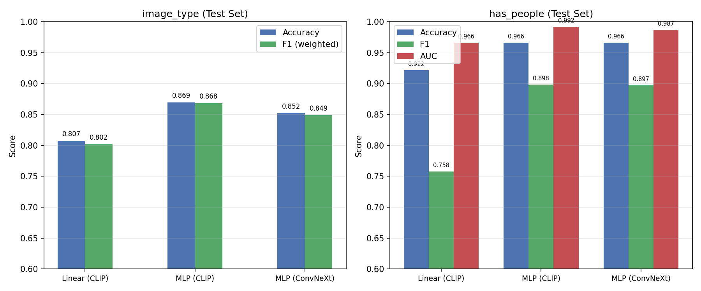
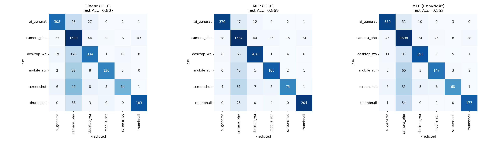
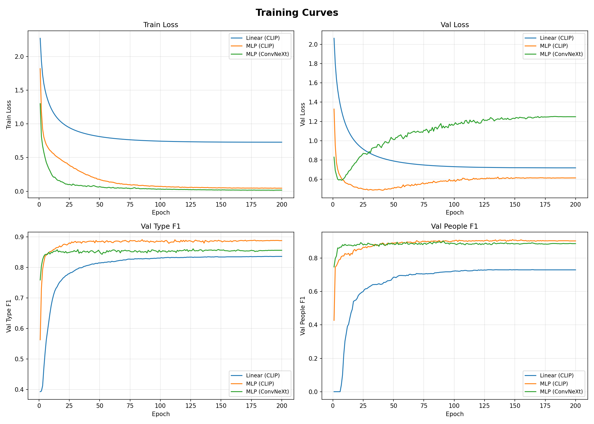
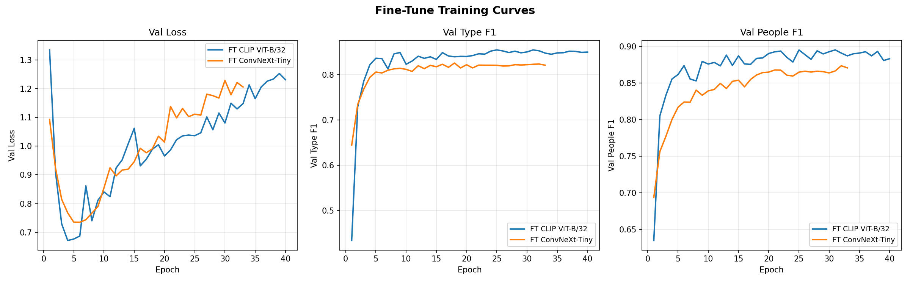
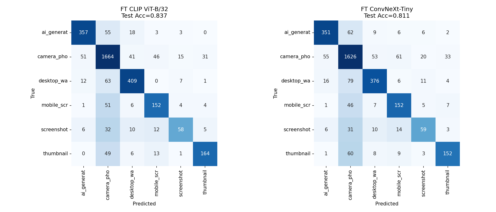

CLIP ViT-B/32 ConvNeXt-Tiny Multi-Task MLP Python · PyTorch
Vitor Y. F. Freitas — Mini-Projeto 2 — Aprendizado de Máquina 2026.1
| Classe | N | % |
|---|---|---|
| camera_photo | 4385 | 54.8% |
| desktop_wallpaper | 1191 | 14.9% |
| ai_generated | 1032 | 12.9% |
| thumbnail | 580 | 7.2% |
| mobile_screenshot | 515 | 6.4% |
| screenshot_desktop | 297 | 3.7% |
has_people: 1.323 positivos (16.5%) — derivado da pasta people/
has_people = 1 se a imagem pertence a people/image_type| CLIP ViT-B/32 [1] | ConvNeXt-Tiny [2] | |
|---|---|---|
| Objetivo | Contrastivo (InfoNCE) | Cross-entropy |
| Dataset | WIT, 400M pares | ImageNet-1K, 1.28M |
| Embedding | 512-dim | 768-dim |
| Extração | fastembed-rs (ONNX) | torchvision (frozen) |
| Métrica | Linear (CLIP) | MLP (CLIP) | MLP (ConvNeXt) | FT CLIP | FT ConvNeXt |
|---|---|---|---|---|---|
| type_acc | 0.807 | 0.869 | 0.852 | 0.837 | 0.811 |
| type_f1 (w) | 0.802 | 0.868 | 0.849 | 0.835 | 0.810 |
| people_acc | 0.922 | 0.966 | 0.966 | 0.965 | 0.956 |
| people_f1 | 0.758 | 0.898 | 0.897 | 0.896 | 0.867 |
| people_auc | 0.966 | 0.992 | 0.987 | 0.986 | 0.980 |
| params | 3.6 K | 165 K | 231 K | 151 M | 28 M |
| Classe | P | R | F1 | N |
|---|---|---|---|---|
| camera_photo | 0.89 | 0.92 | 0.90 | 658 |
| desktop_wallpaper | 0.86 | 0.87 | 0.86 | 179 |
| ai_generated | 0.86 | 0.85 | 0.85 | 155 |
| mobile_screenshot | 0.82 | 0.87 | 0.84 | 77 |
| thumbnail | 0.84 | 0.80 | 0.82 | 87 |
| screenshot_desktop | 0.73 | 0.43 | 0.54 | 44 |


Matrizes de confusão normalizadas (Linear / MLP CLIP / MLP ConvNeXt)

MLP CLIP mantém val_loss estável (~0.5–0.7). MLP ConvNeXt apresenta overfitting acentuado: val_loss sobe de 1.0 a 1.66 enquanto o treino continua caindo.
Checkpoint salvo no melhor val type-F1 (early stop implícito).


Fine-tuning curves e matrizes de confusão — FT CLIP vs FT ConvNeXt
has_people empata (CLIP ≈ ConvNeXt, F1 ~0.83): presença humana é feature visual saliente para qualquer CNN profundascreenshot_desktop F1=0.54 — baixo suporte (44 amostras) + alta variância visual; vai melhorar com dataset completohas_people baseado apenas na pasta people/ — falsos negativos em camera_photo e thumbnail